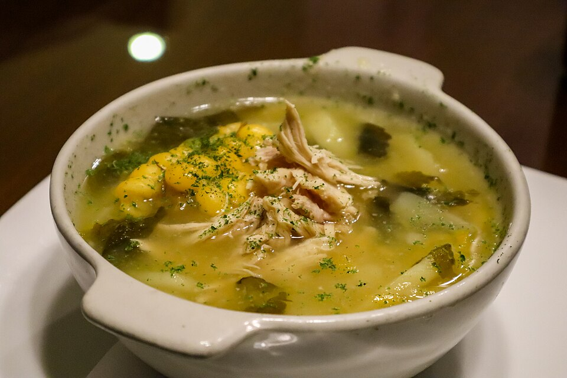

Image by ProtoplasmaKid - Wikimedia Commons - CC-BY-4.0
Ajiaco(Cuban soup)
Ajiaco is a traditional dish of Cuban creole cuisine. It is a thick broth containing a wide variety of vegetables.
Ingredients
- 1 lb chopped pork.
- ¼ kg cured beef (tasajo).
- 1 small stewing hen.
- 87 g bacon.
- 6 cups water.
- 1 lb sweet potato (boniato).
- ½ lb yam (ñame).
- 1 lb cassava (yuca).
- 1 piece of pumpkin, diced.
- 1 lb malanga (taro root).
- 1 green plantain.
- 2 ripe plantains
- 2 ears of tender corn.
- 1 cup tomato sauce.
- 1 onion, finely chopped.
- 1 large chili pepper.
- 4 large garlic cloves.
- 2 limes.
- 2 tablespoons lard
- Salt to taste.
Instructions
- Cut the "tasajo" (cured beef) into medium-sized pieces and let it soak for 12 hours. It is best to do this the night before so the meat is ready when you start preparing your ajiaco.
- After 12 hours, drain the meat well and cook it along with the jointed hen and the 6 cups of water over medium heat for 30 minutes.
- Next, add the pork and cook for another 30 minutes. It is important to monitor the cooking process and skim off the fat and foam that accumulate on the surface of the pot.
- Meanwhile, prepare a stir-fry in a frying pan using lard, garlic, onion, bacon, and tomato sauce.
- Once the pork has finished cooking, add the starchy vegetables (peeled and chopped), the lime juice, and the corn cobs, then let the stew simmer and thicken for 45 minutes. If you want it even thicker, remove a few pieces of yam and malanga from the pot, mash them, and stir them back in.
Home